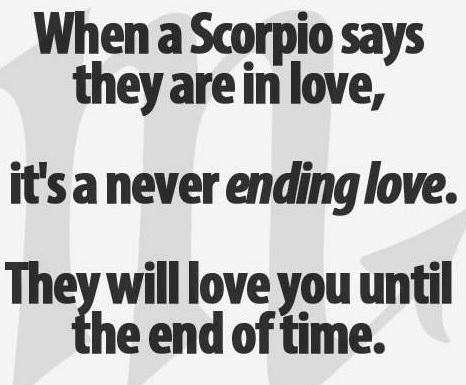
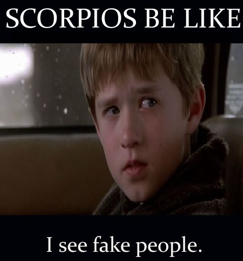

Symbol:The Scorpion
Element:Water
Quality:Fixed
Keyword:"I Create"
Ruling Planet:Pluto and Mars
Strengths:Passionate, Loyal, Resourceful, Trustworthy
Weakness:Jealousy, Doubting, Secretive, Violent
Scorpios are known for their intensity. They are determined individuals that absolutely throw themselves into whatever they do. But getting them
to commit to something is rarely an easy task. In fact, it’s better not to even try to “get them” to do anything.They have strong psychic
abilities. When in love, They believe in soul to soul connection.

To others, Scorpios seem to have plenty of willpower. They probably do. Scorpios do know what they want, and they won’t go out and grab it at
the wrong moment. They simply sit back, watch (quite expertly), and then get it only when the moment is just right. This apparent patience is
simply their powerful skills at strategy at work.
Scorpio isn’t afraid of getting their hands (their bodies, their minds) dirty. The darker side of life intrigues them, and they’re always ready
to investigate. They tend to be secretive about their lives and do not trust people much. They tend to be excellent lie detectors as they can
intuitively “smell” lies and deceit.

Scorpios simply never give up. They have tremendous staying power. They’re not in the slightest intimidated by anybody or anything.
Confrontations are not a problem. In fact, talk to any Scorpio about their lives, and you’ll probably be in awe at all they’ve gone through.
Trauma seems to follow them wherever they go. When Scorpio learns optimism, instead of expecting the worst, they’ll find that they possess
amazing regenerative powers — the power to heal, create, and transform.